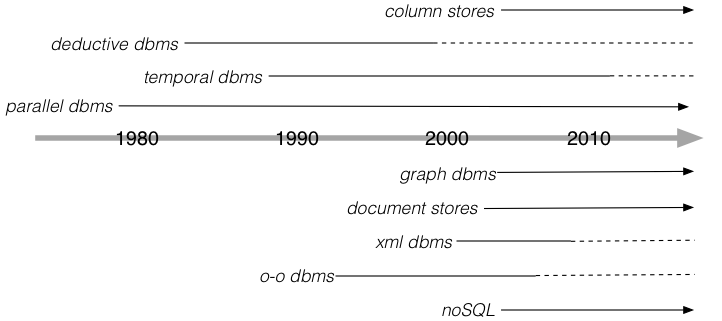
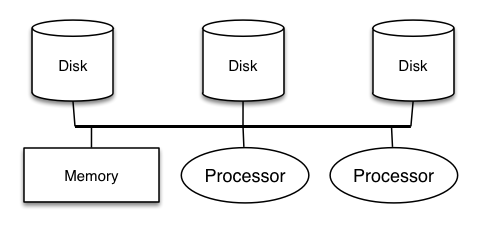
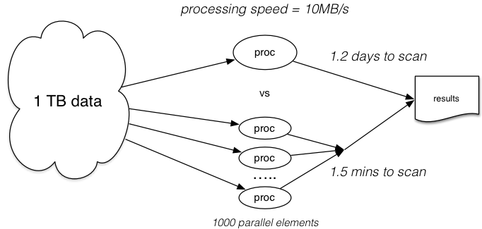
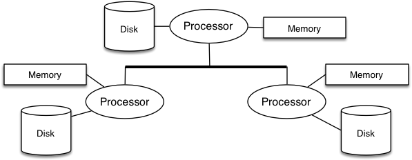
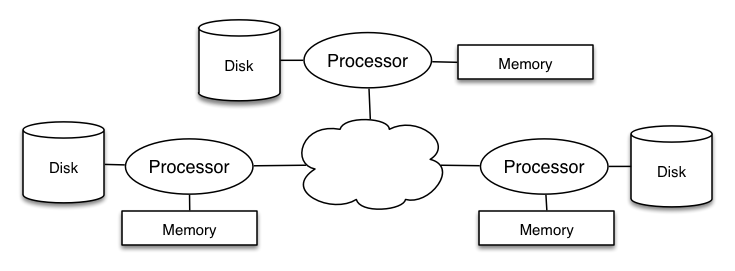
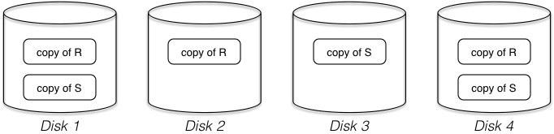
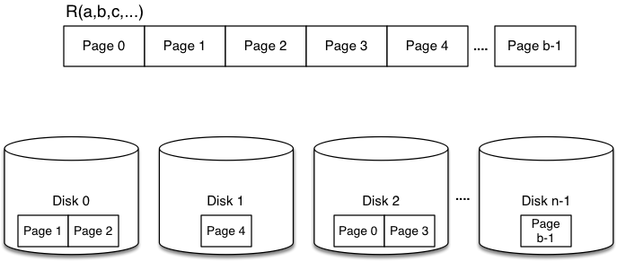
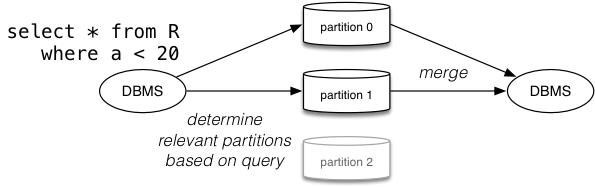
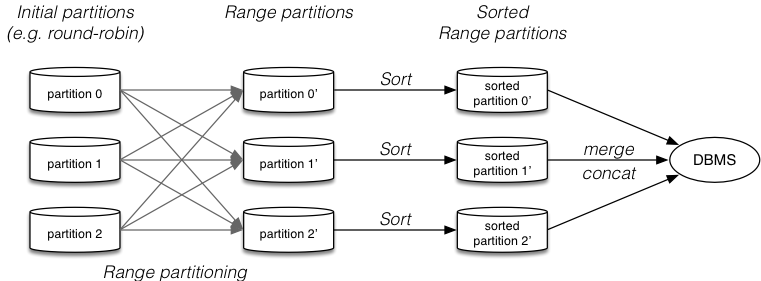
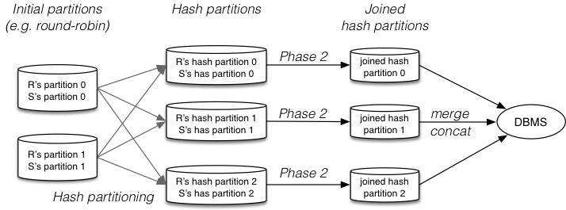

COMP9315 Week 10 Monday Lecture
COMP9315 24T1 ♢ Week 10 Monday Lecture ♢ [0/63]
- Assignment 2
- due 11:59pm TONIGHT (220/490 submissions so far)
- learn to use GDB (for the exam)
- don't pipe through
sort if not working
- Help Sessions
- Tuesday 16 April, 3pm-4pm
- MyExperience
- open now ... please give feedback ... closes April 25
COMP9315 24T1 ♢ Week 10 Monday Lecture ♢ [1/63]
To debug the program:
$ ./select R '?,?,shoes'
Run GDB as follows
$ gdb ./select
...
(gdb) run R '?,?,shoes'
(gdb) where
(gdb) print pid
(gdb) quit
Has many other functions, e.g. break (program stops at a given point)
COMP9315 24T1 ♢ Week 10 Monday Lecture ♢ [2/63]
❖ Transactions (reminder) | |
A transaction is
- a single application-level operation
- implemented via multiple database operations
Transactions deal with three levels of storage
- data on disk, data in memory buffers, data in local variables
Transactions ...
-
COMMIT: all changes are placed in persistent storage
-
ABORT: none of the changes appear in persistent storage
COMP9315 24T1 ♢ Week 10 Monday Lecture ♢ [3/63]
❖ Exercise: Transaction Internals | |
Consider the following transaction:
BEGIN
READ(A,v); v = v*2; WRITE(A,v);
READ(B,v); v = v+1; WRITE(B,v);
COMMIT
Show how the following items change values after each statement
-
v ... value of local variable
-
Buf(A) ... value of A stored in memory buffer
-
Buf(B) ... value of B stored in memory buffer
-
Disk(A) ... value of A stored on disk
-
Disk(B) ... value of B stored on disk
What is the final state after the
COMMIT completes?
COMP9315 24T1 ♢ Week 10 Monday Lecture ♢ [4/63]
❖ Exercise: Transaction Failure | |
Consider the previous transaction.
BEGIN
READ(A,v);
v = v*2;
WRITE(A,v);
READ(B,v);
v = v+1;
WRITE(B,v);
COMMIT
OUTPUT(A)
OUTPUT(B)
What happens if ...
- the tx is aborted before (4)
- the tx is aborted before (7)
- the system crashes before (8)
- the system crashes before (9)
COMP9315 24T1 ♢ Week 10 Monday Lecture ♢ [5/63]
Three "styles" of logging
- undo ... removes changes by any uncommitted tx's
- redo ... repeats changes by any committed tx's
- undo/redo ... combines aspects of both
All approaches require:
- a sequential file of log records
- log records describe a change to a data item
- log records are written first
- actual changes to data are written later
Known as
write-ahead logging (PostgreSQL uses WAL)
COMP9315 24T1 ♢ Week 10 Monday Lecture ♢ [6/63]
Simple form of logging which ensures atomicity.
Log file consists of a sequence of small records:
-
<START T> ... transaction T begins
-
<COMMIT T> ... transaction T completes successfully
-
<ABORT T> ... transaction T fails (no changes)
-
<T,X,v> ... transaction T changed value of X from v
Notes:
- we refer to
<T,X,v> generically as <UPDATE> log records
- update log entry created for each
WRITE (not OUTPUT)
- update log entry contains old value
(new value is not recorded)
COMP9315 24T1 ♢ Week 10 Monday Lecture ♢ [7/63]
Data must be written to disk in the following order:
-
<START> transaction log record
-
<UPDATE> log records indicating changes
- the changed data elements themselves
-
<COMMIT> log record
Note: sufficient to have
<T,X,v> output before
X, for each
X
COMP9315 24T1 ♢ Week 10 Monday Lecture ♢ [8/63]
For the example transaction, we would get:
t Action v B(A) B(B) D(A) D(B) Log
--------------------------------------------------------
(0) BEGIN . . . 8 5 <START T>
(1) READ(A,v) 8 8 . 8 5
(2) v = v*2 16 8 . 8 5
(3) WRITE(A,v) 16 16 . 8 5 <T,A,8>
(4) READ(B,v) 5 16 5 8 5
(5) v = v+1 6 16 5 8 5
(6) WRITE(B,v) 6 16 6 8 5 <T,B,5>
(7) FlushLog
(8) StartCommit
(9) OUTPUT(A) 6 16 6 16 5
(10) OUTPUT(B) 6 16 6 16 6
(11) EndCommit <COMMIT T>
(12) FlushLog
Note that T is not regarded as committed until (12) completes.
COMP9315 24T1 ♢ Week 10 Monday Lecture ♢ [9/63]
Simplified view of recovery using UNDO logging:
- scan backwards through log
- if
<COMMIT T>, mark T as committed
- if
<T,X,v> and T not committed, set X to v on disk
- if
<START T> and T not committed, add <ABORT T> to log
Assumes we scan entire log; use checkpoints to limit scan.
COMP9315 24T1 ♢ Week 10 Monday Lecture ♢ [10/63]
Algorithmic view of recovery using UNDO logging:
committedTrans = abortedTrans = startedTrans = {}
for each log record from most recent to oldest {
switch (log record) {
<COMMIT T> : add T to committedTrans
<ABORT T> : add T to abortedTrans
<START T> : add T to startedTrans
<T,X,v> : if (T in committedTrans)
else
{ WRITE(X,v); OUTPUT(X) }
} }
for each T in startedTrans {
if (T in committedTrans) ignore
else if (T in abortedTrans) ignore
else write <ABORT T> to log
}
flush log
COMP9315 24T1 ♢ Week 10 Monday Lecture ♢ [11/63]
❖ Exercise: Recovery with UNDO Log | |
Show how the UNDO log would be used if the previous tx
- failed at (5)
- failed at (10)
- failed after (12)
COMP9315 24T1 ♢ Week 10 Monday Lecture ♢ [12/63]
Simple view of recovery implies reading entire log file.
Since log file grows without bound, this is infeasible.
Eventually we can delete "old" section of log.
- i.e. where all prior transactions have completed
This point is called a
checkpoint.
- all of log prior to checkpoint can be ignored for recovery
As described we need to wait for all active tx to complete
- known as quiescent checkpointing
- tx's taking a long time to complete block the system
COMP9315 24T1 ♢ Week 10 Monday Lecture ♢ [13/63]
Problem: many concurrent/overlapping transactions.
How to know that all have finished?
- periodically, write log record
<CHKPT (T1,..,Tk)>
(contains references to all active transactions ⇒ active tx table)
- continue normal processing (e.g. new tx's can start)
- when all of
T1,..,Tk have completed,
write log record <END CHKPT> and flush log
Note: tx manager maintains chkpt and active tx information
These kinds of checkpoints are often written as <START CHKPT ...>
COMP9315 24T1 ♢ Week 10 Monday Lecture ♢ [14/63]
Recovery: scan backwards through log file processing as before.
Determining where to stop depends on ...
- whether we meet
<END CHKPT> or <CHKPT...> first
If we encounter <END CHKPT> first:
- we know that all incomplete tx's come after prev
<CHKPT...>
- thus, can stop backward scan when we reach
<CHKPT...>
If we encounter
<CHKPT (T1,..,Tk)> first:
- crash occurred during the checkpoint period
- any of
T1,..,Tk that committed before crash are ok
- for uncommitted tx's, need to continue backward scan
COMP9315 24T1 ♢ Week 10 Monday Lecture ♢ [15/63]
Problem with UNDO logging:
- all changed data must be output to disk before committing
- conflicts with optimal use of the buffer pool
Alternative approach is
redo logging:
- allow changes to remain only in buffers after commit
- write records to indicate what changes are "pending"
- after a crash, can apply changes during recovery
COMP9315 24T1 ♢ Week 10 Monday Lecture ♢ [16/63]
Requirement for redo logging: write-ahead rule.
Data must be written to disk as follows:
- write start transaction
<START T> log record
- write
<UPDATE...> log records indicating changes
- then write
<COMMIT> log record (and flush log)
- then
OUTPUT changed data elements themselves
Note that update log records now contain
<T,X,v'>,
where
v' is the
new value for
X.
COMP9315 24T1 ♢ Week 10 Monday Lecture ♢ [17/63]
For the example transaction, we would get:
t Action v B(A) B(B) D(A) D(B) Log
--------------------------------------------------------
(0) BEGIN . . . 8 5 <START T>
(1) READ(A,v) 8 8 . 8 5
(2) v = v*2 16 8 . 8 5
(3) WRITE(A,v) 16 16 . 8 5 <T,A,16>
(4) READ(B,v) 5 16 5 8 5
(5) v = v+1 6 16 5 8 5
(6) WRITE(B,v) 6 16 6 8 5 <T,B,6>
(7) COMMIT <COMMIT T>
(8) FlushLog
(9) OUTPUT(A) 6 16 6 16 5
(10) OUTPUT(B) 6 16 6 16 6
Note that T is regarded as committed as soon as (8) completes.
COMP9315 24T1 ♢ Week 10 Monday Lecture ♢ [18/63]
Simplified view of recovery using REDO logging:
- identify all committed tx's (backwards scan)
- scan forwards through log
- if
<T,X,v> and T is committed, set X to v on disk
- if
<START T> and T not committed, add <ABORT T> to log
Use checkpoints (like UNDO log checkpoints) to limit scan.
COMP9315 24T1 ♢ Week 10 Monday Lecture ♢ [19/63]
UNDO logging and REDO logging are incompatible in
- order of outputting
<COMMIT T> and changed data
- how data in buffers is handled during checkpoints
Undo/Redo logging combines aspects of both
- requires new kind of update log record
<T,X,v,v'> gives both old and new values for X
- removes incompatibilities between output orders
As for previous cases, requires write-ahead of log records.
Undo/redo loging is common in practice; Aries algorithm.
COMP9315 24T1 ♢ Week 10 Monday Lecture ♢ [20/63]
❖ Undo/Redo Logging (cont) | |
For the example transaction, we might get:
t Action v B(A) B(B) D(A) D(B) Log
--------------------------------------------------------
(0) BEGIN . . . 8 5 <START T>
(1) READ(A,v) 8 8 . 8 5
(2) v = v*2 16 8 . 8 5
(3) WRITE(A,v) 16 16 . 8 5 <T,A,8,16>
(4) READ(B,v) 5 16 5 8 5
(5) v = v+1 6 16 5 8 5
(6) WRITE(B,v) 6 16 6 8 5 <T,B,5,6>
(7) FlushLog
(8) StartCommit
(9) OUTPUT(A) 6 16 6 16 5
(10) <COMMIT T>
(11) OUTPUT(B) 6 16 6 16 6
Note that T is regarded as committed as soon as (10) completes.
COMP9315 24T1 ♢ Week 10 Monday Lecture ♢ [21/63]
❖ Undo/Redo Logging (cont) | |
Simplified view of recovery using UNDO/REDO logging:
- scan log to determine committed/uncommitted txs
- for each uncommitted tx
T add <ABORT T> to log
- scan backwards through log
- if
<T,X,v,w> and T is not committed, set X to v on disk
- scan forwards through log
- if
<T,X,v,w> and T is committed, set X to w on disk
Note: undo/redo logging requires dirty buffers to be flushed at <CHKPT...>
COMP9315 24T1 ♢ Week 10 Monday Lecture ♢ [22/63]
❖ Undo/Redo Logging (cont) | |
The above description simplifies details of undo/redo logging.
Aries is a complete algorithm for undo/redo logging.
Differences to what we have described:
- log records contain a sequence number (LSN)
- LSNs used in tx and buffer managers, and stored in data pages
- additional log record to mark
<END>
(of commit or abort)
-
<CHKPT> contains only a timestamp
-
<END CHKPT..> contains tx and dirty page info
COMP9315 24T1 ♢ Week 10 Monday Lecture ♢ [23/63]
PostgreSQL uses write-ahead undo/redo style logging.
It also uses multi-version concurrency control, which
- tags each record with a tx and update timestamp
MVCC simplifies some aspects of undo/redo, e.g.
- some info required by logging is already held in each tuple
- no need to undo effects of aborted tx's; use older version
Recall: WAL entries in
postgresql.conf
COMP9315 24T1 ♢ Week 10 Monday Lecture ♢ [24/63]
❖ Recovery in PostgreSQL (cont) | |
Transaction/logging code is distributed throughout backend.
Core transaction code is in src/backend/access/transam.
Transaction/logging data is written to files in PGDATA/pg_xlog
- a number of very large files containing log records
- old files are removed once all txs noted there are completed
- new files added when existing files reach their capacity (16MB)
- number of tx log files varies depending on tx activity
COMP9315 24T1 ♢ Week 10 Monday Lecture ♢ [25/63]
❖ Database Trends (overview) | |
COMP9315 24T1 ♢ Week 10 Monday Lecture ♢ [26/63]
Core "database" goals:
- deal with very large amounts of data (petabyes, exabytes, ...)
- very-high-level languages (deal with data in uniform ways)
- fast query execution (evaluation too slow ⇒ useless)
At the moment
(and for the last 30 years) RDBMSs dominate ...
- simple/clean data model, backed up by theory
- high-level language for accessing data
- ~50 years development work on RDBMS engine technology
RDBMSs work well in domains with uniform, structured data.
COMP9315 24T1 ♢ Week 10 Monday Lecture ♢ [27/63]
❖ Future of Database (cont) | |
Limitations/pitfalls of classical RDBMSs:
- NULL is ambiguous: unknown, not applicable, not supplied
- "limited" support for constraints/integrity and rules
- no support for uncertainty (data represents the state-of-the-world)
- data model too simple (e.g. no direct support for complex objects)
- query model too rigid (e.g. no approximate matching)
- continually changing data sources not well-handled
- data must be "molded" to fit a single rigid schema
- database systems must be manually "tuned"
- do not scale well to some data sets (e.g. Google, Telco's)
COMP9315 24T1 ♢ Week 10 Monday Lecture ♢ [28/63]
❖ Future of Database (cont) | |
How to overcome (some) RDBMS limitations?
Extend the relational model ...
- add new data types and query ops for new applications
- deal with uncertainty/inaccuracy/approximation in data
Replace the relational model ...
- object-oriented DBMS ... OO programming with persistent objects
- XML DBMS ... all data stored as XML documents, new query model
- noSQL data stores (e.g. (key,value) pairs, json or rdf)
COMP9315 24T1 ♢ Week 10 Monday Lecture ♢ [29/63]
❖ Future of Database (cont) | |
How to overcome (some) RDBMS limitations?
Performance ...
- new query algorithms/data-structures for new types of queries
- parallel processing
- DBMSs that "tune" themselves
Scalability ...
- distribute data across (more and more) nodes
- techniques for handling streams of incoming data
COMP9315 24T1 ♢ Week 10 Monday Lecture ♢ [30/63]
❖ Future of Database (cont) | |
An overview of the possibilities:
- "classical" RDBMS (e.g. PostgreSQL, Oracle, SQLite)
- parallel DBMS (e.g. XPRS)
- distributed DBMS (e.g. Cohera)
- deductive databases (e.g. Datalog)
- temporal databases (e.g. MariaDB)
- column stores (e.g. Vertica, Druid)
- object-oriented DBMS (e.g. ObjectStore)
- key-value stores (e.g. Redis, DynamoDB)
- wide column stores (e.g. Cassandra, Scylla, HBase)
- graph databases (e.g. Neo4J, Datastax)
- document stores (e.g. MongoDB, Couchbase)
- search engines (e.g. Google, Solr)
COMP9315 24T1 ♢ Week 10 Monday Lecture ♢ [31/63]
❖ Future of Database (cont) | |
Historical perspective

COMP9315 24T1 ♢ Week 10 Monday Lecture ♢ [32/63]
Some modern applications have massive data sets (e.g. Google)
- far too large to store on a single machine/RDBMS
- query demands far too high even if could store in DBMS
Approach to dealing with such data
- distribute data over large collection of nodes (also, redundancy)
- provide computational mechanisms for distributing computation
Often this data does not need full relational selection
- represent data via (key,value) pairs
- unique keys can be used for addressing data
- values can be large objects (e.g. web pages, images, ...)
COMP9315 24T1 ♢ Week 10 Monday Lecture ♢ [33/63]
Popular computational approach to such data: map/reduce
- suitable for widely-distributed, very-large data
- allows parallel computation on such data to be easily specified
- distribute (map) parts of computation across network
- compute in parallel (possibly with further mapping)
- merge (reduce) multiple results for delivery to requestor
Some large data proponents see no future need for SQL/relational ...
- depends on application (e.g. hard integrity vs eventual consistency)
Humour:
Parody of noSQL fans
(strong language warning)
COMP9315 24T1 ♢ Week 10 Monday Lecture ♢ [34/63]
DBMSs generally do precise matching (although like/regexps)
Information retrieval systems do approximate matching.
E.g. documents containing a set of keywords (Google, etc.)
Also introduces notion of "quality" of matching
(e.g. tuple T1 is a better match than tuple T2)
Quality also implies ranking of results.
Ongoing research in incorporating IR ideas into DBMS context.
Goal: support database exploration better.
COMP9315 24T1 ♢ Week 10 Monday Lecture ♢ [35/63]
Data which does not fit the "tabular model":
- image, video, music, text, ... (and combinations of these)
Research problems:
- how to specify queries on such data?
(image1 ≅ image2)
- how to "display" results?
(synchronize components)
Solutions to the first problem typically:
- extend notions of "matching"/indexes for querying
- require sophisticated methods for capturing data features
Sample query: find other songs
like this one?
COMP9315 24T1 ♢ Week 10 Monday Lecture ♢ [36/63]
Multimedia/IR introduces approximate matching.
In some contexts, we have approximate/uncertain data.
E.g. witness statements in a crime-fighting database
"I think the getaway car was red ... or maybe orange ..."
"I am 75% sure that John carried out the crime"
Work by Jennifer Widom at Stanford on the Trio system
- extends the relational model (ULDB)
- extends the query language (TriQL)
COMP9315 24T1 ♢ Week 10 Monday Lecture ♢ [37/63]
❖ Stream Data Management Systems | |
Makes one addition to the relational model
- stream = infinite sequence of tuples, arriving one-at-a-time
Applications:
news feeds, telecomms, monitoring web usage, ...
RDBMSs: run a variety of queries on (relatively) fixed data
StreamDBs: run fixed queries on changing data (stream)
One approach: window = "relation" formed from a stream via a rule
E.g. StreamSQL
select avg(price)
from examplestream [size 10 advance 1 tuples]
COMP9315 24T1 ♢ Week 10 Monday Lecture ♢ [38/63]
Uses graphs rather than tables as basic data structure tool.
Applications: social networks, ecommerce purchases, interests, ...
Many real-world problems are modelled naturally by graphs
- can be represented in RDBMSs, but not processed efficiently
- e.g. recursive queries on
Nodes, Properties, Edges tables
Graph data models: flexible, "schema-free", inter-linked
Typical modeling formalisms: XML, JSON, RDF
COMP9315 24T1 ♢ Week 10 Monday Lecture ♢ [39/63]
Characteristics of dispersed databases:
- very large numbers of small processing nodes
- data is distributed/shared among nodes
Applications:
environmental monitoring devices, "intelligent dust", ...
Research issues:
- query/search strategies
(how to organise query processing)
- distribution of data
(trade-off between centralised and diffused)
Less extreme versions of this already exist:
- grid and cloud computing
- database management for mobile devices
COMP9315 24T1 ♢ Week 10 Monday Lecture ♢ [40/63]
❖ Parallelism in Databases | |
COMP9315 24T1 ♢ Week 10 Monday Lecture ♢ [41/63]
RDBMS discussion so far has revolved around systems
- with a single or small number of processors
- accessing a single memory space
- getting data from one or more disk devices

COMP9315 24T1 ♢ Week 10 Monday Lecture ♢ [42/63]
Why parallelism? ... Throughput!

COMP9315 24T1 ♢ Week 10 Monday Lecture ♢ [43/63]
DBMSs are a success story in application of parallelism
- can process many data elements (tuples) at the same time
- can create pipelines of query evaluation steps
- don't require special hardware
- can hide paralleism within the query evaluator
- application programmers don't need to change habits
Compare this with effort to do parallel programming.
COMP9315 24T1 ♢ Week 10 Monday Lecture ♢ [44/63]
Types: shared memory, shared disk, shared nothing
Example shared-nothing architecture:

Typically same room/LAN (data transfer cost ~ 100's of μsecs .. msecs)
COMP9315 24T1 ♢ Week 10 Monday Lecture ♢ [45/63]
❖ Distributed Architectures | |
Distributed architectures are ...
- effectively shared-nothing, on a global-scale network

Typically on the Internet (data transfer cost ~ secs)
COMP9315 24T1 ♢ Week 10 Monday Lecture ♢ [46/63]
❖ Parallel Databases (PDBs) | |
Parallel databases provide various forms of parallelism ...
- process parallelism can speed up query evaluation
- processor parallelism can assist in speeding up memory ops
- processor parallelism introduces cache coherence issues
- disk parallelism can assist in overcoming latency
- disk parallelism can be used to improve fault-tolerance (RAID)
- one limiting factor is congestion on communication bus
COMP9315 24T1 ♢ Week 10 Monday Lecture ♢ [47/63]
❖ Parallel Databases (PDBs) (cont) | |
Types of parallelism
- pipeline parallelism
- multi-step process, each processor handles one step
- run in parallel and pipeline result from one to another
- partition parallelism
- many processors running in parallel
- each performs same task on a subset of the data
- results from processors need to be merged
COMP9315 24T1 ♢ Week 10 Monday Lecture ♢ [48/63]
Assume that each table/relation consists of pages in a file
Can distribute data across multiple storage devices
- duplicate all pages from a relation (replication)
- store some pages on one store, some on others (partitioning)
Replication example:

COMP9315 24T1 ♢ Week 10 Monday Lecture ♢ [49/63]
❖ Data Storage in PDBs (cont) | |
Data-partitioning example:

COMP9315 24T1 ♢ Week 10 Monday Lecture ♢ [50/63]
❖ Data Storage in PDBs (cont) | |
A table is a collection of pages (aka blocks).
Page addressing on single processor/disk: (Table, File, Page)
- Table maps to a set of files (e.g. named by tableID)
- File distinguishes primary/overflow files
- PageNum maps to an offset in a specific file
If multiple nodes, then addressing depends how data distributed
- partitioned: (Node, Table, File, Page)
- replicated: ({Nodes}, Table, File, Page)
COMP9315 24T1 ♢ Week 10 Monday Lecture ♢ [51/63]
❖ Data Storage in PDBs (cont) | |
Assume that partitioning is based on one attribute
Data-partitioning strategies for one table on n nodes:
- round-robin, hash-based, range-based
Round-robin partitioning
- cycle through nodes, new tuple added on "next" node
- e.g. i th tuple is placed on (i mod n)th node
- balances load on nodes; no help for querying
COMP9315 24T1 ♢ Week 10 Monday Lecture ♢ [52/63]
❖ Data Storage in PDBs (cont) | |
Hash partitioning
- use hash value to determine which node and page
- e.g. i = hash(tuple) so tuple is placed on i th node
- helpful for equality-based queries on hashing attribute
Range partitioning
- ranges of attr values are assigned to processors
- e.g. values 1-10 on node0, 11-20 on node1, ..., 99-100 noden-1
- potentially helpful for range-based queries
In both cases, data skew may lead to unbalanced load
COMP9315 24T1 ♢ Week 10 Monday Lecture ♢ [53/63]
❖ Parallelism in DB Operations | |
Different types of parallelism in DBMS operations
- intra-operator parallelism
- get all machines working to compute a given operation
(scan, sort, join)
- inter-operator parallelism
- each operator runs concurrently on a different processor
(exploits pipelining)
- Inter-query parallelism
- different queries run on different processors
COMP9315 24T1 ♢ Week 10 Monday Lecture ♢ [54/63]
❖ Parallelism in DB Operations (cont) | |
Parallel scanning
- scan partitions in parallel and merge results
- maybe ignore some partitions
(e.g. range and hash partitioning)
- can build indexes on each partition
Effectiveness depends on query type vs partitioning type

COMP9315 24T1 ♢ Week 10 Monday Lecture ♢ [55/63]
❖ Parallelism in DB Operations (cont) | |
Parallel sorting
- scan in parallel, range-partition during scan
- pipeline into local sort on each processor
- merge sorted partitions
Potential problem:
- data skew because of unfortunate choice of partition points
- resolve by initial data sampling to determine partitions
COMP9315 24T1 ♢ Week 10 Monday Lecture ♢ [56/63]
❖ Parallelism in DB Operations (cont) | |
Parallel sort:

COMP9315 24T1 ♢ Week 10 Monday Lecture ♢ [57/63]
❖ Parallelism in DB Operations (cont) | |
Parallel nested loop join
- each outer tuple needs to examine each inner tuple
- but only if it could potentially join
- range/hash partitioning reduce partitions to consider
Parallel sort-merge join
- as noted above, parallel sort gives range partitioning
- merging partitioned tables has no parallelism (but is fast)
COMP9315 24T1 ♢ Week 10 Monday Lecture ♢ [58/63]
❖ Parallelism in DB Operations (cont) | |
Parallel hash join
- distribute partitions to different processors
- partition 0 of R goes to same node as partition 0 of S
- join phase can be done in parallel on each processor
- then results need to be merged
- very effective for equijoin
Fragment-and-replicate join
- outer relation R is partitioned (using any partition scheme)
- inner relation S is copied to all nodes
- each node computes join with R partition and S
COMP9315 24T1 ♢ Week 10 Monday Lecture ♢ [59/63]
❖ Parallelism in DB Operations (cont) | |
Parallel hash join:

COMP9315 24T1 ♢ Week 10 Monday Lecture ♢ [60/63]
❖ PostgreSQL and Parallelism | |
PostgreSQL assumes
- shared memory space accessable to all back-ends
- files for one table are located on one disk
PostgreSQL allows
- data to be distributed across multiple disk devices
So could run on ...
- shared-memory, shared-disk architectures
- hierarchical architectures with distributed virtual memory
COMP9315 24T1 ♢ Week 10 Monday Lecture ♢ [61/63]
❖ PostgreSQL and Parallelism (cont) | |
PostgreSQL can provide
- multiple servers running on separate nodes
- application #1: high availability
- "standby" server takes over if primary server fails
- application #2: load balancing
- several servers can be used to provide same data
- direct queries to least loaded server
Both need
data synchronisation between servers
PostgreSQL uses notion of master and slave servers.
COMP9315 24T1 ♢ Week 10 Monday Lecture ♢ [62/63]
❖ PostgreSQL and Parallelism (cont) | |
High availability ...
updates occur on master, recorded in tx log
tx logs shipped/streamed from master to slave(s)
slave uses tx logs to maintain current state
configuration controls frequency of log shipping
bringing slave up-to-date is "fast" (~1-2secs)
Note: small window exists for data loss (committed tx log records not sent)
Load balancing ...
- not provided built-in to PostgreSQL, 3rd-party tools exist
COMP9315 24T1 ♢ Week 10 Monday Lecture ♢ [63/63]
Produced: 15 Apr 2024